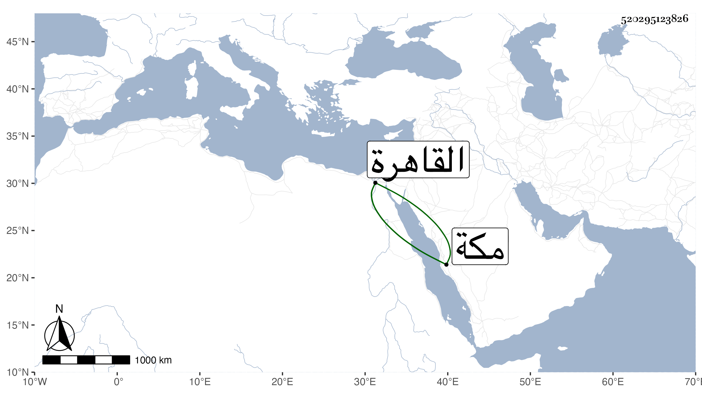

0902Sakhawi.DawLamic.ITO20230111-ara1.EIS1600.520295123826
Biography ID: 520295123826
ابن عبد القوي محمد أبو اليسر ويحيى وعلي بنو القطب أبي الخير محمد بن عبد القوي وأولهم خادم المحل المنسوب للسيدة خديجة بمكة وله ابن اسمه أبو الفضل وليحيى حسيبة وادريس ومعمر وفضل وجعفر ماتت أولهم وهي أم بني النور الفاكهي ولادريس يحيى وأبو الليث ولمعمر محمد وعبد الله ولفضل جعفر محمد وأما علي فمات في سنة تسع وسبعين وله نظم وفضل وقدم القاهرة مرارا وكتب كتابا لمكة ذكر فيه ما اقتضى له ضيما ولجدهم القطب أخ اسمه أحمد ممن أجاز لنا وابنه أبو اليسر محمد يشهد بمكة في باب السلام .
